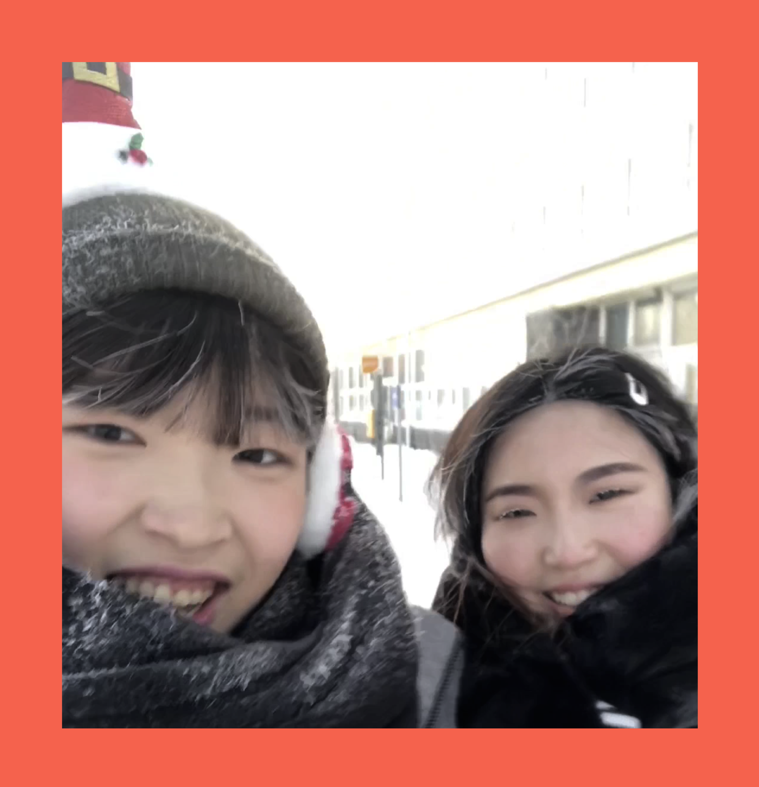
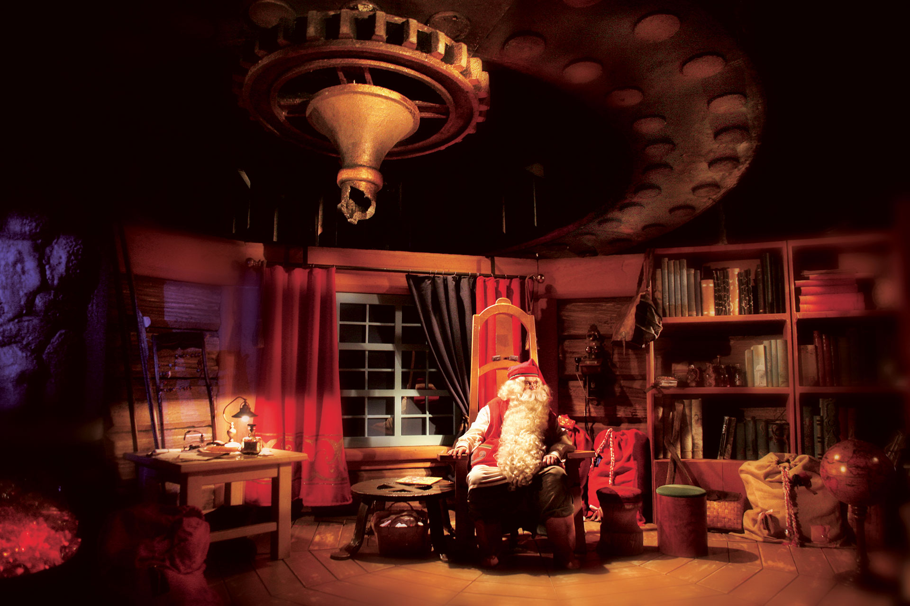

비행기에서 내린 곳은 핀란드의 수도 헬싱키. 산타마을이 있는 로바니에미로 바로 갈 수 없기 때문에 헬싱키에서 하룻밤 자고 시린 새벽에 기차를 타러 떠났다. 몇시간 달리고 다른 기차를 갈아탄 뒤 8시간 이상 달리는 내내 창밖은 새하얀 숲과 설원이었다. 이따금씩 잘린 나무들이 지나가는 것 외에는 똑같은 풍경이 십수시간 동안 계속해서 지나갔다.

잘_얼은_눈사람_둘.jpg
머리카락이❄️얼어붙어요
로바니에미에 도착한 하루동안 시내를 구경하고 다음날 우리는 마침내 산타마을에 발을 디뎠다. 지금 북극권에 있다는게 믿기지 않았지만, 패딩 2겹을 뚫고 느껴지는 추위로나마 실감을 하려고 했다. 이 신기한 풍경을 찍으려 장갑을 벗으면 바로 손이 얼고 얼굴을 드러내면 얼굴이 얼어붙었다. 숨을 쉬면 입김으로 입주변에 서리가 생겨 최대한 입김을 아래로 뿜었다. 심지어 핸드폰을 꺼내기만 하면 방전되어 사진을 찍기가 굉장히 어려웠다. 그래도 사진만은 남겨야 한다는 마음에 열심히 뛰어다니고, 핸드폰을 모닥불에 데우며 춥지 않은 척 노력했다.
허스키야 사랑해🐶
우리는 제일 먼저 허스키 파크를 찾아갔다. 허스키들이 견학온 유치원생들처럼 두마리씩 짝지어 우리를 기다리고 있었다. 안내자분이 알 수 없는 언어로 신호를 보내자 십수개의 복실복실한 엉덩이가 일제히 달리기 시작했다. 허스키들은 달리다가 귀찮으면 그냥 멈춰버린다던가, 똥이 마려우면 그냥 달리면서 해결해버리는 등 굉장히 자유로운 녀석들이었다. 눈덮인 평야를 달리며 신나게 질주하는 댕댕이들의 뒷모습을 보는 순간은 매우 시원하고 짜릿했다.

이 부분은 특별히 동료👱♀️ 지민씨를 인터뷰하여 2인의 기억으로 구성했습니다.
드디어 산타를 만나게 되다니!
👱♀️:가짜인걸 알고는 있지만 산타와 일대일로 만난다니 괜히 심장이 떨리고 어린 애가 된 기분이었다. 화장실 거울 앞에서 방방거리면서 화장을 고치고 앞머리도 여중생처럼 정리하고 대기 했다. 대기줄에는 엘프도 있었고 다른 어른이들도 있었다.
우리 차례가 되어서 들어간 곳에는 마치 투데이쇼 촬영장 처럼 세트가 꾸며져 있었고 카메라가 놓여 있었다. 하지만 산타의 모습이 너무 진짜같아서 내 머리 속의 생각은 다 없어지고 아!! 산타한테 무슨 말하지!!! 라는 생각만 들었다. 떨리는 와중에 하고 싶은 말을 해야해서 오물오물 열심히 말을 내뱉었다. '산타...이때까지...선물 놓아줘서 고마웠어요..'
👩:산타를 만나기 전 거쳐야 하는 구간은 아이돌 팬사인회 현장같았다. 통로에 크리스마스 디데이 벽이 있었는데, 마침 그날은 크리스마스가 지난지 한달 정도 된 D-333 이었다.
사실 전날부터 산타에게 무슨 말을 할 지 고민이었다. 난 산타를 만나는게 신기했을 뿐 그에 대한 감정이 별로 없었다. 그래서 그냥 캐주얼하고 쿨한 대화를 하기로 했다. 마침 나는 순록 뿔이 달린 모자를 쓰고있었기 때문에 한국 청년들의 취업난이라는 현실을 반영하여 ‘헤이, 요즘 밖에 취업하기 힘든데 여기 순록으로 취직해도 될까요?’ 라고 물어봤다. 그러자 산타는 바로 ‘물론! 하지만 순록이 먹는 풀을 먹을 수 있다면 말이야.’라고 받아쳤다. 지금와서 돌이켜보면 한명은 선물줘서 고맙다고 한 것에 비해 한명은 아무말이나 한 것이 좀 웃기지만 산타는 특유의 다 괜찮아 미소로 hohoho-하고 웃었다.
👱♀️: 옆에서 루돌프로 취직시켜달라는 얘기를 해서 어? 어쩌다 저런 대화를 하게 된거야...? 싶었다. 어쨌든 산타는 말랑 폭신 따뜻했고 굉장히 컸다. 사진 찍을 때 산타 팔에 기대는데 마치 속에 뜨끈한 물을 채운 죽부인 같았다. 통통한데 눈은 되게 맑고 우리가 얘기할 때면 싱긋 웃으며 막힘없이 술술 대답을 해줬다. 굉장히 희망적이고 포근한 답변이었다. 끝나고 나서 다시 어른들의 상술로 돌아왔다. 가짜라는걸 알면서도 진짜 같았던 산타와의 만남. 재밌었다.
잘있어라 산타마을🔔
눈썰매 타고, 기념품 구경하고, 중앙 우체국에서 보고싶은 사람들에게 보낼 편지를 쓰고나니 5시가 되었다. 겨울의 5시는 한밤중과 같기 때문에 서둘러 숙소로 돌아갔다. 마치 어린이가 되어 친구랑 놀이동산에 온 기분이었다. 웃기는 모자를 쓰고 눈에 빠지고 뒤집어져도 깔깔거리며 웃는 것이 너무 오랜만이었다. 아직 더 즐기고 싶은 마음이 커서 서운했지만 아쉬움을 두고가는 것마저도 어릴 때의 나 같다는 생각이 들어서 재미있었다.